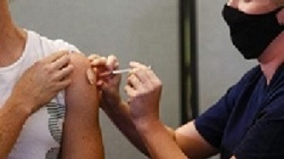

Italia: Una mujer recibe por error seis dosis de la vacuna de Pfizer-BioNTech

Una joven en Italia recibió el domingo por error seis dosis de la vacuna contra el COVID-19 de Pfizer-BioNTech y aunque está en buen
estado de salud quedó en observación en un hospital de la Toscana (centro), informó el lunes la agencia AGI.El error se produjo cuando
una enfermera, en lugar de inyectar una dosis de la vacuna a la estudiante de medicina de 23 años, le administró todo el frasco,
equivalente a seis dosis, según la misma fuente. Según AGI, la experimentación sobre los efectos de una posible sobredosis de la
vacuna de Pfizer-BioNTech se limitó a cuatro dosis por lo que este caso de seis dosis es desconocido en la literatura médica.Italia
registró 10 554 nuevos contagios de COVID-19 y 207 muertos en el último día, informó hoy el Ministerio de Sanidad, mientras se debate
cuándo quitar el toque de queda nacional, actualmente fijado en las diez de la noche.Las nuevas infecciones son unas mil menos que ayer,
cuando se registraron 11 807 positivos, pese a que se han hecho 328 612 pruebas diagnósticas, unas 4 000 más que el jueves.Los fallecidos
han disminuido de 258 la víspera hasta 207 en las últimas horas, lo que eleva el total de decesos en Italia a 122 470 desde que se desató la
pandemia en el país, en febrero de 2020, y los italianos contagiados desde entonces son ya 4 millones 092 747.La presión en los hospitales
sigue a la baja pues de los 397 564 actuales positivos por coronavirus -menos de 400 000 por primera vez desde el 25 de febrero-,
19 millones 175 18 584 se encuentran ingresados, 591 enfermos menos que ayer. De ellos, 2 millones 253 2 308 requieren cuidados intensivos
(55 menos).La COVID-19 ha puesto en alerta a todos. Suscríbete a nuestro newsletter Todo sobre el coronavirus, donde encontrarás los datos
diarios más relevantes del país y del mundo sobre el avance del virus y la lucha contra su propagación.
Diario Expresión 22/11/1984